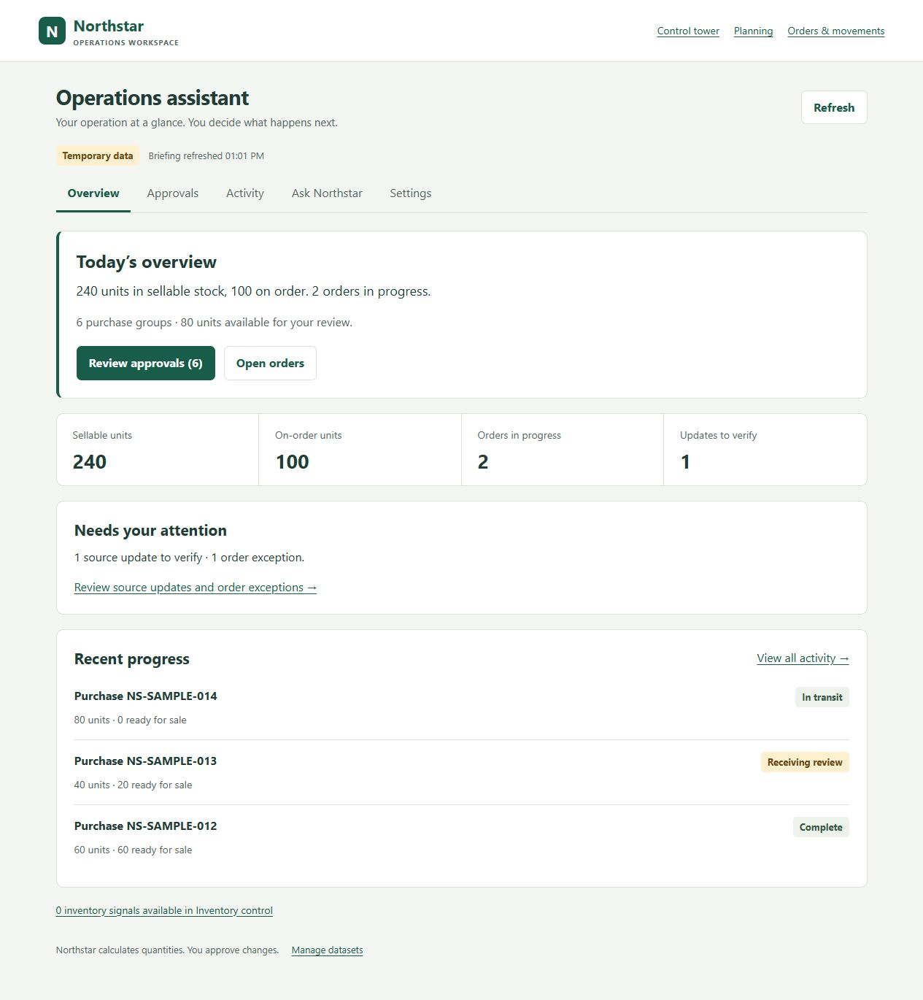

01
In development
Automation & agentic integration
Northstar Control Tower
The next evolution of my replenishment control tower: connected operations and an AI assistant that reviews records, explains issues, and prepares actions for human approval. Partner connections currently use test adapters.